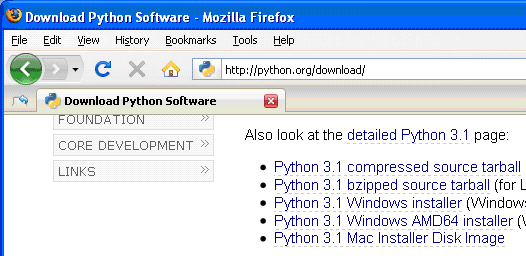

| Go to Chapter 2 - The Interactive Shell |
Hello! This is a book that will teach you how to program by showing you how to create computer games. Once you learn how the games in this book work, you'll be able to create your own games. All you'll need is a computer, some software called the Python Interpreter, and this book. The software you'll need is free and you can download it from the Internet.
When I was a kid, I found a book like this that taught me how to write my first programs and games. It was fun and easy. Now as an adult, I still have fun programming computers, and I get paid for it. But even if you don't become a computer programmer when you grow up, programming is a useful and fun skill to have.
Computers are very useful machines. The good news is that learning to program a computer is easy. If you can read this book, you can program a computer. A computer program is just a bunch of instructions run by a computer, just like a storybook is just a whole bunch of sentences read by the reader.
These instructions are like the turn-by-turn instructions you might get for walking to a friend's house. (Turn left at the light, walk two blocks, keep walking until you find the first blue house on the right.) The computer follows each instruction that you give it in the order that you give it. Video games are themselves nothing but computer programs. (And very fun computer programs!)
In this book, any words you need to know will look like this. For example, the word "program" is defined in the previous paragraph.
In order to tell a computer what you want it to do, you write a program in a language that the computer understands. The programming language this book teaches is named Python. There are many different programming languages including BASIC, Java, Pascal, Haskell, and C++ (pronounced, "c plus plus").
When I was a kid most people learned to program in BASIC as their first language. But new programming languages have been invented since then, including Python. Python is even easier to learn than BASIC and it's a serious programming language used by professional computer programmers. Many adults use Python in their work (and when programming just for fun).
The first few games we'll create together in this book will probably seem simple compared to the games you've played on the Xbox, Playstation, or Wii. They don't have fancy graphics or music but that's because they're meant to teach you the basics. They're purposely simple so that we can focus on learning to program. Games don't have to be complicated to be fun. Hangman, Tic Tac Toe, and making secret codes are simple to program but are also fun.
We'll also learn how to make the computer solve some math problems in the Python shell. (Don't worry if you don't know a lot of mathematics. If you know how to add and multiply, you know enough math to do programming. Programming is more about problem solving and making plans than it is about solving math problems.)
Before we can begin programming you'll need to install software called the Python interpreter. (You may need to ask an adult for help here.) The interpreter is a program that understands the instructions that you'll write in the Python language. Without the interpreter, your computer won't understand these instructions and your programs won't work. (We'll just refer to "the Python interpreter" as "Python" from now on.)
Because we'll be writing our games in the Python language we need to download Python first, from the official website of the Python programming language, http://www.python.org
I'm going to give you instructions for installing Python on Microsoft Windows, not because that's my favorite operating system but because chances are that's the operating system that your computer is running. You might want the help of someone else to download and install the Python software.
When you get to python.org, you should see a list of links on the left (About, News, Documentation, Download, and so on.) Click on the link to go to the download page, then look for the file called Python 3.1 Windows Installer (Windows binary -- does not include source) and click on its link to download Python for Windows.

Figure 1-1: Click the Windows installer link to download Python for Windows from http://www.python.org
Double-click on the python-3.1.msi file that you've just downloaded to start the Python installer. (If it doesn't start, try right-clicking the file and choosing Install.) Once the installer starts up, click the button and just accept the choices in the installer as you go (no need to make any changes). When the install is finished, click .
Important Note! Be sure to install Python 3, and not Python 2. The programs in this book use Python 3, and you'll get errors if you try to run them with Python 2.
The installation for Mac OS is similar. Instead of downloading the .msi file from the Python website, download the .dmg Mac Installer Disk Image file instead. The link to this file will look something like "Mac Installer disk image (3.1.1)" on the "Download Python Software" web page.
If your operating system is Ubuntu, you can install Python by opening a terminal window (click on Applications > Accessories > Terminal) and entering sudo apt-get install python3 then pressing Enter. You will need to enter the root password to install Python, so ask the person who owns the computer to type in this password.
There may be a newer version of Python available than 3.1. If so, then just download the latest version. The game programs in this book will work just the same. If you have any problems, you can always Google for "installing Python on <your operating system's name>". Python is a very popular language, so you should have no difficulty finding help.
A video tutorial of how to install Python is available from this book's website at http://inventwithpython.com/videos/.
If your operating system is Windows XP, you should be able to run Python by choosing , , , . When it's running it should looking something like Figure 1-2. (But different operating systems will look slightly different.)

Figure 1-2: The IDLE program's interactive shell on Windows.
IDLE stands for Interactive DeveLopment Environment. The development environment is software that makes it easy to write Python programs. We will be using IDLE to type in our programs and run them.
The window that appears when you first run IDLE is called the interactive shell. A shell is a program that lets you type instructions into the computer. The Python shell lets you type Python instructions, and the shell sends these instructions to software called the Python interpreter to perform. We can type Python instructions into the shell and, because the shell is interactive, the computer will read our instructions and respond in some way. (Ideally in a way that we expect but that will depend on whether we write the correct instructions.)
There are a few things you should understand about this book before you get started. "Invent with Python" is different from other programming books because it focuses on the complete source code for different games. Instead of teaching you programming concepts and leaving it up to you to figure out how to make fun games with those concepts, this book shows you fun games and then explains how they are put together.
Most chapters begin with a sample run of the featured program. This sample run shows you what the program's output looks like, with what the user types in shown as bold print. This will give you an idea of what the complete game will look like when you have entered the code and run it.
Some chapters also show the complete source code of the game, but remember: you don't have to enter every line of code right now. Instead, you can read the chapter first to understand what each line of code does and then try entering it later.
You can also download the source code file from this book's website. Go to the URL http://inventwithpython.com/source and follow the instructions to download the source code file.
When entering the source code yourself, do not type the line numbers that appear at the beginning of each line. For example, if you see this in the book:
You do not need to type the "9." on the left side, or the space that immediately follows it. Just type it like this:
Those numbers are only used so that this book can refer to specific lines in the code. They are not a part of the actual program.
Aside from the line numbers, be sure to enter the code exactly as it appears. Notice that some of the lines don't begin at the leftmost edge of the page, but are indented by four or eight spaces. Be sure to put in the correct number of spaces at the start of each line. (Since each character in IDLE is the same width, you can count the number of spaces by counting the number of characters above or below the line you're looking at.)
For example, you can see that the second line is indented by four spaces because the four characters ("whil") on the line above are over the indented space. The third line is indented by another four spaces (the four characters, "if n" are above the third line's indented space):
Some lines of code are too long to fit on one line on the page, and the text of the code will wrap around to the next line. When you type these lines into the file editor, enter the code all on one line without pressing Enter.
You can tell when a new line starts by looking at the line numbers on the left side of the code. For example, the code below has only two lines of code, even though the first line wraps around:
You can visit http://inventwithpython.com/traces to see a trace through each of the programs in this book. Tracing a program means to step through the code one line at a time, in the same way that a computer would execute it. The traces web page has notes and helpful reminders at each step of the trace to explain what the program is doing, so it can help you better understand why these programs work the way they do.
Some of the games in this book are a little long. Although it is very helpful to learn Python by typing out the source code for these games, you may accidentally make typos that cause your game programs to crash. It may not be obvious where the typo is.
You can copy and paste the text of your source code to the online diff tool on the book's website. The diff tool will show any differences between the source code in the book and the source code you've typed. This is an easy way of finding any typos in your program.
Copying and pasting text is a very useful computer skill, especially for computer programming. There is a video tutorial on copying and pasting at this book's website at http://inventwithpython.com/videos/.
The online diff tool is at this web page: http://inventwithpython.com/diff. A video tutorial of how to use the diff tool is available from this book's website at http://inventwithpython.com/videos/.
This chapter has helped you get started with the Python software by showing you the python.org website where you can download it for free. After installing and starting the Python IDLE software, we will be ready to learn programming starting in the next chapter.
This book's website at http://inventwithpython.com has more information on each of the chapters, including an online tracing website that can help you understand what exactly each line of the programs do.
| Go to Chapter 2 - The Interactive Shell |